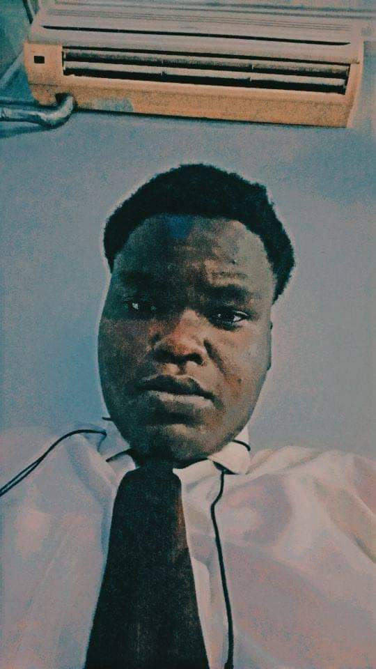

Akpara joshua | WDD 130
Hello! My name is Akpara Joshua and i am from Nigeria, Abia state. I enjoy playing video games. I am an upcoming web developer, currently studiyng at byu-idaho.
Hello! My name is Akpara Joshua and i am from Nigeria, Abia state. I enjoy playing video games. I am an upcoming web developer, currently studiyng at byu-idaho.